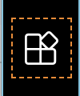
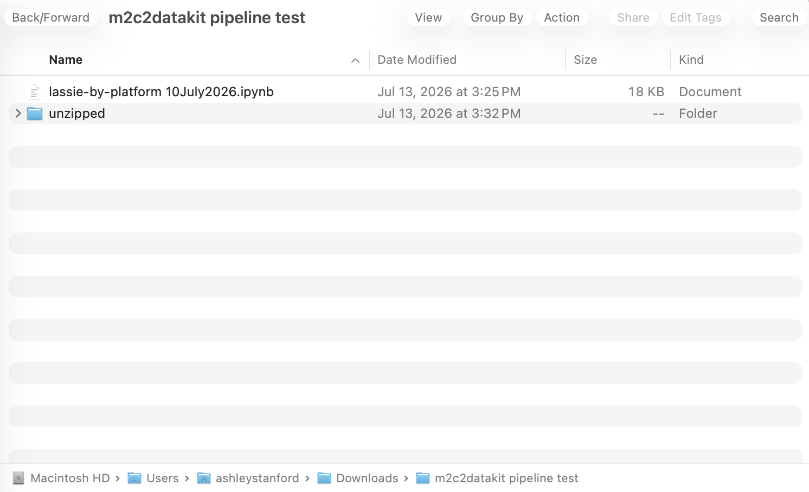
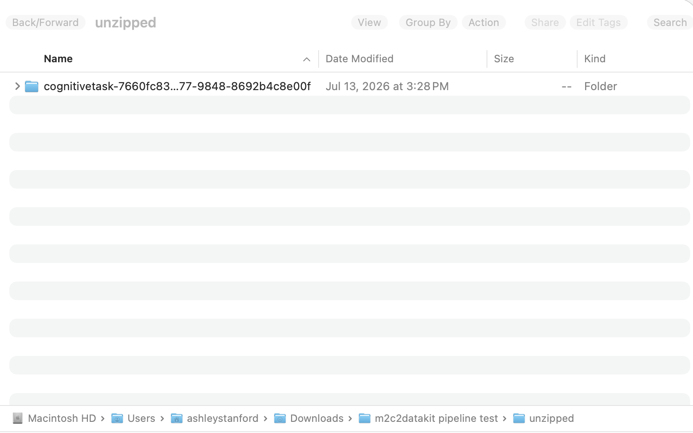

M2C2 DataKit Notebook Overview
1. Purpose
Enable researchers to plug in data from varied sources (e.g., Qualtrics, MetricWire, MongoDB, CSV bundles) and apply a consistent pipeline for:
- Input validation
- Scoring via predefined rules
- Inspection and summarization
- Tidy export (trial-level and session-level scoring)
2. Inspired by
| Step | Method | Purpose |
|---|---|---|
| L | load() | Load raw data from a supported source (e.g., MongoDB, UAS, MetricWire). |
| A | assure() | Validate that required columns exist before processing. |
| S | score() | Apply scoring logic based on predefined or custom rules. |
| S | summarize() | Aggregate scored data by participant, session, or custom groups. |
| I | inspect() | Visualize distributions or pairwise plots for quality checks. |
| E | export() | Save scored and summarized data to tidy files and optionally metadata. |
3. Before you begin: Installations and Helpful Guides
Please note that this guide is set up for using Python with Visual Studio Code. You are welcome to use other tools; however, the M2C2 team cannot provide guidance for all available tools.
1. Installs
Python: https://www.python.org/
- Hover over “Downloads” and select the most recent release for your current device.
Visual Studio Code: https://code.visualstudio.com/download
- Visual Studio Code (VS Code) is a free editor that can open and run Jupyter notebooks.
- Select the release for your current device.
Python and Jupyter extensions for VS Code
- While in Visual Studio Code, you will need to install the Python and Jupyter extensions.
- VS Code will often prompt you to install these when you open a notebook.
- If prompted, please accept/install both.
- If VS Code does not prompt you, you can install the extensions manually:
- Open VS Code.
- Click the extensions icon on the left sidebar. It looks like this →

- Search for “Python”.
- Install the extension published by Microsoft.
- Search for “Jupyter”.
- Install the extension published by Microsoft.
- Close and re-open VS Code.
- Open the notebook file again.
2. Helpful Setup Guides
Python download page:
Getting started with Python in Visual Studio Code:
Jupyter notebooks in Visual Studio Code:
4. Getting Started
Once Python and Visual Studio Code are installed, you can begin running the notebook.
1. Move all files to a single folder location
- The folder should contain only the following:
- The Jupyter notebook (a file ending in .ipynb)
- The data
2. Open the notebook in Visual Studio Code.
- If prompted to allow untrusted files, select to “open” the file.
3. Select a Kernel
- At the top right side of the screen you will see a button that says “Select Kernel”.
- If you do not do this step, you will be prompted to select a Kernel.
- Note. Sometimes, the kernel will be automatically selected, and you will not be prompted to do anything. If so, you can continue.
- Click on “Python Environments” and select the most recent version of Python.
- You may also be prompted to install Python, if you have not done so already.
5. Running the Notebook
Run the Code Blocks
- Note. The location of the ‘play’ button is different depending on whether you are using a Mac or Windows.
- On Mac, this is what your play button should look like: Click anywhere in the code block to make this navigation button appear.
- On Windows, your play button will be on the left side of the code block:
- Run each code block in order by clicking on the play button.
- Spinning arrows and a timer will indicate when a code block is running.
- Make sure each block is completely finished before starting the next code block.
- This is indicated by a green check mark.
Best Practices
- Let every block fully run before moving on to the next block.
- ONLY run the block(s) listed under the platform that you used.
- The only code you need to edit is the file path. Please read below for more instructions.
Editing your file path
To easily copy your file path, follow the steps outlined below:
- Mac
- Open Finder and locate the file you need.
- Right-click or Control + click the file.
- Press and hold the Option key on your keyboard.
- The menu will change; click Copy "[file name]" as Pathname.
- Paste the copied path.
- Windows
- Open File Explorer and find your file.
- Select the file once.
- Press Ctrl + Shift + C to copy the full path directly to your clipboard.
- Paste the copied path.
Important information for the file path:
- The dashes in the path must be forward slashes (/) and not backward slashes (\).
- Make sure that there are no extra characters inside the “ ” for the file path.
A Special Note on MetricWire
You must edit your file path so that it points to the folder where your MetricWire exported data are located. It is best practice to move the data to the same folder as the notebook. Note that the data folder must be unzipped.
- IMPORTANT
- To unzip the data folder:
- Mac
- Double-click the zip file.
- Windows
- Right-click the folder and select “Extract all”.
- Follow the instructions to save the files to a new folder.
- Mac
- Move all of the data to a separate folder in the folder with the notebook called “unzipped”.
- To unzip the data folder:

- The end of the file path will need to have a series of forward slashes and stars:
/*/*/*/*/*.json- For example, the path for the screenshot provided above is:
source_path_mw = "C:/Users/ashleystanford/Downloads/m2c2datakit pipeline test/unzipped/*/*/*/*/*.json" - The new “unzipped” folder should contain all the folders downloaded from MetricWire. It should look something like this:
- For example, the path for the screenshot provided above is:

- NOTE: If you have not followed the steps above exactly as they are written and you receive an error, you will need to check to ensure the number of subfolders in the “unzipped” folder is equal to the number of “/*” that are in your file path.
7. Accessing your Data
Your export will be located in the same folder as the Jupyter notebook named ‘tidy_m2c2_export’.
8. FAQs
I am getting error messages and cannot move forward - what should I do?
- Your first step should be to try closing the file without pressing save and starting the process over from the beginning.
- If the same error persists, make sure your selected Kernel is the most recent version of Python.
- For Windows users, check that your file path is correct.
Windows pathing uses backslashes (e.g., C:\Users\Name\data). Because Python interprets backslashes as special characters, this often breaks. You have three options:
- Swap backslashes to forward slashes:
"C:/Users/Name/data/my_dataset.csv" - Use double backslashes:
"C:\\Users\\Name\\data\\my_dataset.csv" - Put an
rin front of the string (raw string):r"C:\Users\Name\data\my_dataset.csv"
- For MetricWire users:
- If using MetricWire, make sure your data has been unzipped; otherwise, the data cannot be processed.
- If using MetricWire, make sure the file path includes:
/*/*/*/*/*.jsonappended to the end.
If you have other questions, please complete the Question & Issue Form to submit an inquiry. You can also contact us at m2c2@psu.edu.